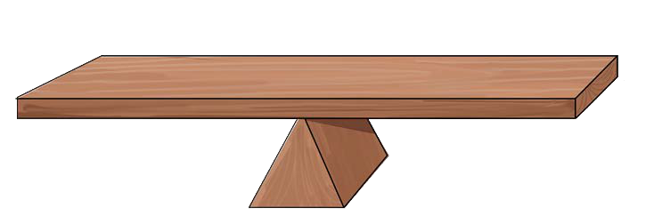

Equations
The word “equation” is derived from the verb “equal”. An equation is like a beam balance whereby two sides must be balanced. An equation is a mathematical statement that show two expressions connected by an equal sign.
There are simple equations and not simple equations. Simple equations have one variable whose power is one, whereas, not simple equations have more than one variables and have power larger than one.
Activity 1
Explaining the concept of equations
Use a piece of wood or timber to make the following instrument, then use it to perform the balancing game.

A
B
C
Steps
1.
Put two stones A and B, or any other objects of the same size, in two sides.
2.
The object labeled C is placed between A and B as shown in the figure.
3.
If the stones A and B are placed on one side of the balance and the equation tilts to one side, it means that it is not an equation, because the mass on the one side will be greater than the mass on the other side.
4.
For the equation to balance, the stones A and B should be of the same mass.